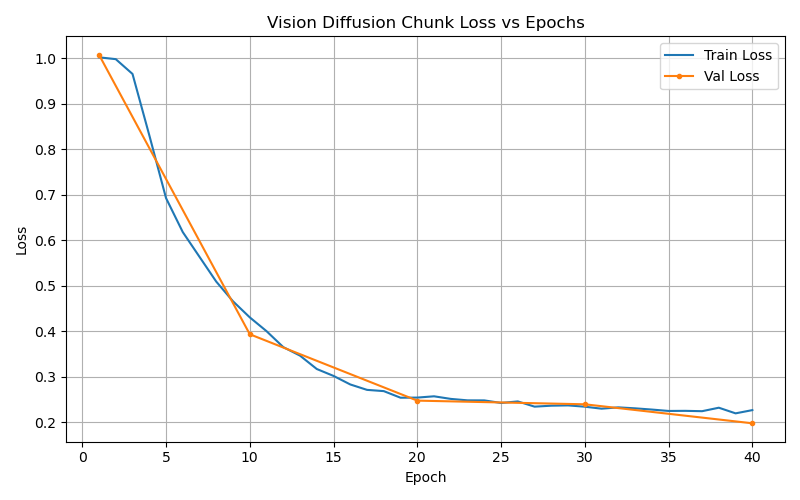

Project Overview
Best Model Architecture: Simple UNet (High-Dim)
Other Models Tester: Simple UNet (Low-Dim), Vision Diffusion, Diffusion UNet, Baseline Simple MLP
Robot Platform: Franka Panda 7-DOF arm mounted on an Omron wheeled base with a torso lift joint
Objective: Open a cabinet

General Overview
- Features: The input state observations for all models besides Vision Diffusion consist of a 16-dimensional vector concatenated with 6-dimensions of augmented handle positions. The Vision Diffusion model does not include augmented handle features, but rather image observations from the three cameras. Action targets are 12-dimensional vectors controlling the 7-DoF arm, gripper, and mobile base.
- Action Chunking / Sequence Prediction: Rather than predicting a single set of joint velocities at every step (which suffers from compounding execution errors), the UNet architectures output sequences of future actions (action chunks). The context window is kept at n_obs_steps: 2, where the model sees the current step and the previous state simultaneously to establish basic velocity context. The Diffusion UNet and both the Simple UNet models predict over n_action_steps: 16 future steps and execute 8 internally. The Vision Diffusion model predicts its sequence across n_action_steps: 8 and executes all 8 before replanning. With this, the policy controls the robot every 8 steps by creating a smooth plan for the near future (temporally-consistent chunk) and executing it open-loop within execution bounds. This prevents the robot from over-correcting itself and ensures its physical movements are smooth and stable.
- Loss Functions: For the Baseline MLP and Simple UNet models, we employ simple Mean Squared Error (MSE) loss between the predicted actions and the ground-truth demonstrations. For Diffusion-based models, the loss is the Denoise Error, computing the MSE on the added noise during the forward diffusion process.
Tested Models
Vision Diffusion Chunk (~2.65M params)
- Inputs: Three separate RGB camera viewpoints (
robot0_agentview_left,robot0_agentview_right,robot0_eye_in_hand) scaled to64x64, combined with the default 16-dimensionalobservation.state. - Vision Encoder: Inherits the ResNet18 backbone standard implementation from the
diffusion_policyrepository mapping to a 128-dimensional vision feature vector. - Takes visual inputs concatenated with the 16-dimensional proprioceptive state and diffuses noise into a structured action trajectory.
Diffusion UNet (~15.8M params)
- ConditionalUnet1D alongside a DDPMScheduler.
- Generative Diffusion Policy.
- Takes pure Gaussian noise and iteratively denoises it into a valid action sequence over 16-100 steps. The environment state is injected as a "global condition" feature vector that guides the network on how to sculpt the noise.
- As a score-matching diffusion process, it excels at learning multi-modal behaviors (e.g., approaching an object from the left OR the right with equal probability, rather than averaging the paths and crashing).
- Inputs: The global condition contains the 16-dimensional base state and 6-dimensions of augmented handle data. Flattened across
n_obs_steps = 2, the global condition is a 44-dimensional vector. - Speed: Slower during evaluation inference. To make a single prediction, it has to loop through the network multiple times to clear the noise out iteratively.
Low-Dimensional Simple UNet (~0.32M params)
- Standard, deterministic Simple CNN.
- There is no probability generation or noisy diffusion steps. It directly embeds the history of the joint angles/handle tracking and immediately predicts exactly what the expert demonstrator would do as a sequence output via single feed-forward pass. It uses simple 1D Conv layers and skip connections to maintain temporal structure.
- Inputs: Dropping Base and EEF quaternions in the state vector to rely strictly on 8 dimensions + 6-dimensions of augmented handle data per step. Flattened over n_obs_steps = 2, its global conditioning relies strictly on a 28-dimensional state vector matrix.
- Speed: Blazing fast. It produces the complete action trajectory in exactly one inference pass, and it trains to its peak capability incredibly quickly (often maxing out its validation accuracy by Epoch 4-6 before overfitting, while Diffusion models usually need 50-100 epochs to stabilize the noise mapping).
High-Dimensional Simple UNet (~14M params)
- A scaled-up version of the Simple UNet for higher capacity, preserving the fully deterministic action-prediction approach.
- Inputs: Same as the Low-Dimensional Simple UNet.
Evaluation
As suggested by the TA, we relaxed the success criteria from opening both cabinet doors to just opening one door. Additionally, we lowered the threshold for success to be opening one door 0.3rad (~17 degrees). In a small sample size of N=50 rollouts for evaluating each model on pretrain episodes, we got the following:
| Model Architecture | Grasp Success Rate |
|---|---|
| Baseline Simple MLP | 0% |
| Vision Diffusion Chunk | 0% |
| Diffusion UNet (200 epochs) | 28% |
| Diffusion UNet (400 epochs) | 34% |
| Simple UNet (Low-Dim) | 44% |
| Simple UNet (High-Dim) | 46% |
Visualizations & Demos
Below are diagram of the design of the model, the loss vs. epoch during training, and the visual outputs of the agent's behavior during evaluation.
Baseline Simple MLP


Vision Diffusion


Diffusion UNet (200 ep)


Diffusion UNet (400 ep)

Simple UNet (Low-Dim)


Simple UNet (High-Dim)